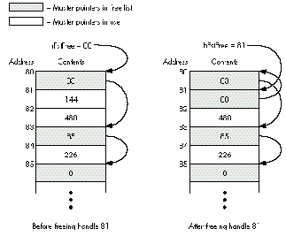

This is a supplement to the article "Macintosh Debugging: A Weird Journey Into the
Belly of the Beast" in Issue 8 of develop. It presents a few debugging tools that were
discussed at Apple's Worldwide Developers Conference in May 1992. Like those
discussed in the previous article, these tools are designed to help you force the nasty,
subtle bugs in your code to show their hideous little faces immediately, rather than
lying in wait and biting you when you least expect it.
People often ask us, "How can I be a totally awesome, godlike debugging stud [or
studette] like you?" Unfortunately, the big truth from the Issue 8 debugging article is
just as true now as it was then: debugging is hard. That's just the way it is. The only
way to get better at it is to practice. Now that we've got that straight and before we get
into describing the new debugging tools, here are three pearls of wisdom to guide you
in your practice.
First of all, it helps to know a lot about the operating system. The better sense you
have of how the Macintosh works, the better off you'll be trying to track down a nasty
bug. Dare to delve into the bowels of the OS. Read and rereadInside Macintosh; take it
with you to bed, to the bathroom, out to dinner, and on dates. (You might want to invest
in a sturdy wheelbarrow, especially with the new Inside Macintosh volumes
proliferating like rabbits.) For that matter, read every Macintosh programming book
ever written (especially those listed at the end of this article) and every Technical
Note, Snippet, piece of Sample Code, and issue ofdevelop, as well as every word on the
AppleLink Discussion boards. Also, spend lots of time in debuggers, watching the
system do its thing. If you're not dreaming in hex, you're not spending enough time in
MacsBug.
Second, get slammed a lot. The people who are the best at debugging are usually the
ones who've had to track down the most bugs and therefore have an encyclopedic
knowledge of them. If you have a really nasty bug in your code that crashes the machine
on a seemingly random basis and takes you three days to find and squash, then by jove
you'll remember that bug the next time you see it. Simply put, the more bugs you find,
the better you'll be at finding bugs.
Last, use good tools, and use them all. Reread the Issue 8 article. Turn on those tools
and stress your code. Bend, fold, staple, and mutilate it. Show no mercy.
These things will help you on your way to becoming a primo bug stomper, but
debugging is like any complex skill in that it can't really be taught past a certain point.
You simply have to do it a lot, andover time you'll get better. Tools and techniques such
as the ones presented here can help enormously, especially by forcing hidden bugs to
the surface, but they can never do the whole job for you.
This time there are only four new tools to talk about -- Double Trouble, Dispose
Resource, Blat, and Smart Friends -- so this article is much shorter than the last one.
The tools are available on theDeveloper CD Seriesdisc, as well as on AppleLink and
elsewhere. We're doing this backward from the last time: first we'll present a buggy
code sample, then we'll talk about the tool that would find the bug.
Can you find the bug in this code sample?
myHandle = NewHandle(100);
if (myHandle) {
AddResource(myHandle, 'dumb', 10, "\p");
if (resError()) HandleTheError();
CloseResFile(outputFileRef);
DisposeHandle(myHandle);
}
OK, time's up. This one's not too hard. The problem is that during CloseResFile the
Resource Manager disposes of all the resources in memory. The DisposeHandle call
afterward is unnecessary and is actually potentially disastrous. Normally you'll just
get an error and DisposeHandle will do nothing, but occasionally the data structures in
the Memory Manager will conspire to really screw you.
Here's how: Master pointers are allocated in clumps called master pointer blocks,
which are nonrelocatable blocks in your application's heap. The master pointers that
are currently free for use are kept in a linked list by the Memory Manager. The list is
LIFO, like a stack: when you allocate a new handle, the Memory Manager uses the first
master pointer in the free list, and when you dispose of a handle the freed master
pointer is returned to the beginning of the list.
Now the plot thickens. If the first master pointer in the free list also happens to be the
first master pointer in its master pointer block (so that the master pointer and the
master pointer block have the same address) and then you dispose of a handle twice by
mistake,very bad thingswill happen. On the first dispose, everything is fine: the
Memory Manager frees the block the master pointer points to and returns the master
pointer to the start of the free list. At this time, the master pointerstill points to a
valid block of memory, but now it's the master pointer block itself! So on the second,
unintentional dispose, when the Memory Manager dutifully frees the block for reuse,
you're set up for disaster. Subsequent memory use will likely result in writing over
many master pointers, which will of course trash you one way or another.
Figure 1 illustrates this scenario. On the left is the top part of a master pointer block
that resides in the heap at address 80. The heap's free list is a standard linked list
(each entry contains the next entry's address) beginning at hFstFree. Note that the
first entry in the heap's free list is also the first master pointer in the block. This is
the first step to trouble.

Figure 1 How Disposing of the Same Handle Twice Can Spell Disaster
Now we call DisposeHandle on the master pointer at 81. DisposeHandle looks at the
block pointed to by the master pointer (in this case the block at 144, not shown),
determines that it is indeed a valid block, marks it as free for reuse, and adds the
newly freed master pointer to the front of the free list. So far so good. Now the master
pointer block looks like the one on the right in the figure.
Then we call DisposeHandle on 81 again by mistake. DisposeHandle looks at the block
pointed to by the master pointer (now it's the block at 80, our master pointer block!),
determines that it is indeed a valid block (uh oh), marks it as free for reuse (yikes!),
and adds the newly freed master pointer to the front of the free list -- and the heap is
now hosed for good. This Memory Manager bug is subtle and rare, but oh so nasty.
Even if you're lucky enough to avoid this particular sequence of events, a double
disposal is definitely a bug. Double Trouble is a system extension that watches calls to
DisposeHandle to make sure it's not being called on something in the free list. If it is,
Double Trouble drops into the debugger with a suitable warning.
We'll be the first to admit that Double Trouble is far from perfect. It infers the
existence of heap zones by watching InitZone and then trying to figure out when a heap
isn't a heap anymore. The possibility exists that it will guess wrong and cause a bus
error when trying to walk a free list that's no longer a free list. Furthermore, in some
cases Double Trouble can noticeably slow down parts of the system. (After playing a
long QuickTime movie, for instance, the machine may freeze for almost a minute.)
But despite Double Trouble's shortcomings, we do still recommend running it all the
time. Just try to remember that it's running so you don't chase your tail trying to find
the cause of occasional mysterious slowdowns.
Here's the code. What's the bug?
myPicture = GetPicture(kPicID);
if (myPicture) {
DrawPicture(myPicture, &myRect);
DisposeHandle(myPicture);
}
That's right, you should never call DisposeHandle on a resource handle. If you do, the
Memory Manager will free it just fine, but the Resource Manager has another
reference to it, stored in the resource map, that will be left dangling. Later on, since
the Resource Manager doesn't know the handle was disposed of, it may try some
manipulation with the handle. The results may not crash you immediately, or at all --
it depends on what the operation is and what's in the handle -- but they're certainly
not what was intended. Instead of DisposeHandle, you should always call
ReleaseResource on resource handles. ReleaseResource will properly dispose of the
handleandwill update the resource map. (Note that KillPicture won't do the right thing
here either; it's intended for pictures created via OpenPicture, not for PICT
resources.)
Dispose Resource is another extension a lot like Double Trouble. It also watches
DisposeHandle calls, this time looking to see if the handle being disposed of is a
resource handle. If so, you'll drop into the debugger with a suitable warning.
Dispose Resource has one idiosyncrasy you should know about: it's been known to
indicate "false positives." Some parts of the system (we haven't been able to track
down which ones yet) seem to save a resource handle's state, detach the resource, and
then restore the state of the handle (restoring the resource bit!). Use Dispose
Resource. It will ensure that you don't make the same mistake.
This time the code's in assembler:
; Offset the rect by 128 pixels in each direction.
PEA theRect(A6)
MOVE.W $0080, -(SP)
MOVE.W $0080, -(SP)
_OffsetRect
If you have "iron man" syndrome and insist on programming in assembly language,
this can happen to you. We forgot to type a # in front of each $0080. As a result,
instead of moving the number $0080 (128) onto the stack twice in preparation for
the OffsetRect call, we're moving the contents of memory location $0080. Often this
kind of bug is immediately obvious, but not always. If you're moving a Boolean, for
instance, you have a fifty-fifty chance of getting the right value, even though you're
getting it from some random spot in memory. It's those cases that will give you
debugging headaches.
One easy (and recommended) way to avoid the problem in this example is to write in a
higher-level language. But we realize that's not always possible, and besides, this is
really a wholeclassof problems: reads and writes from places in memory you didn't
intend. The best way to catch this wild memory reference kind of problem is,
naturally, with memory protection, something that -- sadly -- the Macintosh
normally lacks. In the last article we mentioned Jasik's implementation, but now
there's something else you should know about. Bo3b Johnson has written a dcmd called
Blat that uses the MMU to protect memory locations 0-255 from both reads and
writes.
Blat has been tested and works well on the Macintosh IIfx, IIx, and SE/30. Because its
operation is so hardware dependent, it's hard to predict whether it will work on a
given machine. Some basic guidelines are that it requires an MMU and won't work with
68040 machines or with most configurations of machines with the IIci ROM (IIci,
IIsi, LC). For further details, see the release notes and the source code, thoughtfully
provided by Bo3b along with the dcmd itself.
This bug is subtle, so pay close attention:
#pragma parameter __d0 GetA0
Ptr GetA0(void) = {0x2008}; // MOVE.l A0,D0
void MyCompletionRoutine()
{
long saveA5;
HooHahPtr myHooHah;
myHooHah = (HooHahPtr)GetA0();
saveA5 = SetA5(myHooHah->myA5);
gSomething[0].flag = true; // Set a flag in a global array.
SetA5(saveA5);
}
This code really tries hard to do everything right. As the name implies, it's a
completion routine, so it could be called at interrupt time. First a pointer to the data is
retrieved from A0, and then A5 is set to a previously saved value, thus allowing the
routine to access its global variables. Once A5 is set up, the global reference can be
made safely. Finally, A5 is restored to its previous value to clean up. Sounds great,
right? The only problem is, it doesn't work.
Here's why: the MPW C compiler will actually set up the global referencebeforethe
SetA5 call, so accessing the global accesses some unknown part of memory. This is
legal compiler optimization behavior! If GetA0 and SetA5 were functions or traps, the
bug would disappear, but since they're declared inline the compiler doesn't feel
compelled to delay the evaluation of the global array reference. The solution is to set
up A5, then call a different routine that does the global reference.
Now in this case, how do you think we -- the debugging gods -- figured out the bug?
We tried the first few things we could think of; but then when we weren't making
headway after a few probes, we didn't just sit there and suffer in silence, banging our
heads against the proverbial wall. We called in some Smart Friends! The veil of
illusion was torn from our eyes, and we were shown the heart of the truth (in other
words, one of them had seen this bug before). The point is that in debugging, two (or
more) heads are far, far better than one. Bugs are not like germs: when you share
them, everyone benefits. Maybe your very own Smart Friends have had a similar bug
before, so they'll recognize immediately what's going on. Or maybe they'll think of
something different to try. At the very least, they'll temporarily divert you from your
frustration, maybe make you feel less stupid, and then you can all go out for pie
together.
Add these tools to your arsenal of bug sprays and foggers. Use them all and use them
well, and you, your code, and your customers will be far better off.
Bedside books for the serious student of debugging:
FRED HUXHAM (AppleLink FRED) was born and raised in California. He used to be a
tremendous athlete, know bazillions of babes, and go to wild parties in New York and
California with people like Andy Warhol and Keith Haring. Now he's 15 pounds
heavier, knows only one babe (his wife), and thinks a day spent sitting on his roof
deck watching boats go through the Golden Gate is really exciting.*
GREG MARRIOTT (AppleLink GREG) is a SWM, 28, 6'0", 195 lbs., brown hair and
eyes, sincere, hardworking, good sense of humor. Enjoys music, romantic walks, quiet
evenings, and good books. Seeks nice woman for friendship and more. Send photo.*
In Bo3b's name, the "3" is silent. *
THANKS TO OUR TECHNICAL REVIEWERS Jim Reekes and Bryan Stearns*